遺品整理・生前整理の専門家 遺品整理士が「心に寄り添う整理」をお約束します
遺品整理・生前整理・特殊清掃・ゴミ屋敷整理・ハウスクリーニング・不要品整理・車両手続きまで、
東海遺品整理がワンストップで対応いたします。
愛知・三重・滋賀・静岡・長野その他地域もご相談ください。
東海遺品整理が選ばれる理由
遺品整理士資格保有
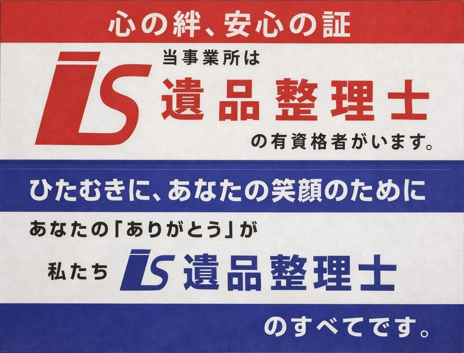専門資格を持つスタッフが丁寧に対応します。
女性スタッフ在籍
女性ならではの気配りで安心。
買取・リユース
リユース可能な品は買取します。
供養対応
提携寺院での供養も可能。
こんなお悩みはありませんか？
どこから手をつけていいか分からない
遠方で立ち会いが難しい
車両の名義変更・廃車も頼みたい
女性スタッフに対応してほしい
そのお悩み、すべて当社が解決します。
サービス一覧
遺品整理
丁寧な仕分け・搬出・清掃まで一括対応。
生前整理
ご家族の負担を減らす整理。
ゴミ屋敷整理
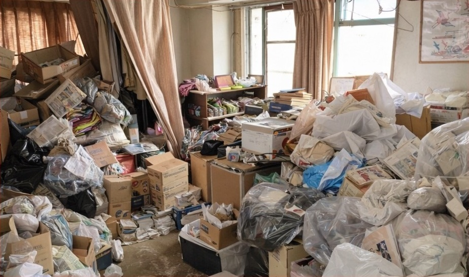大量の不用品も迅速に片付け。
特殊清掃
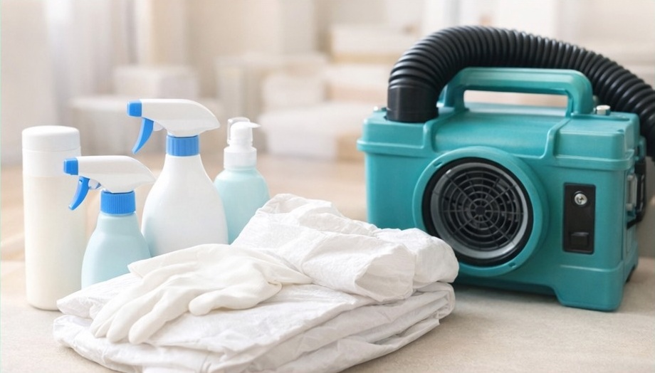専門技術が必要な現場にも対応。
家財・残置物整理
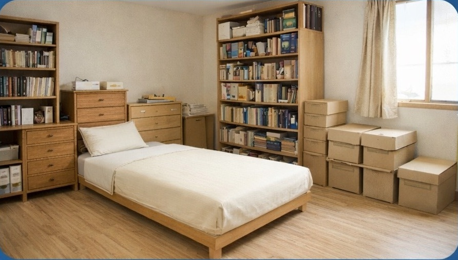残った家財をまとめて整理。
不要品整理
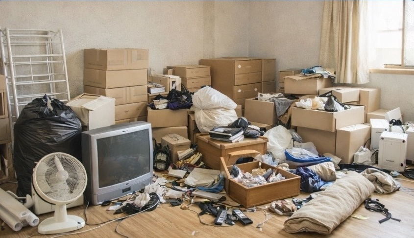家具・家電など幅広く対応。
車両手続き
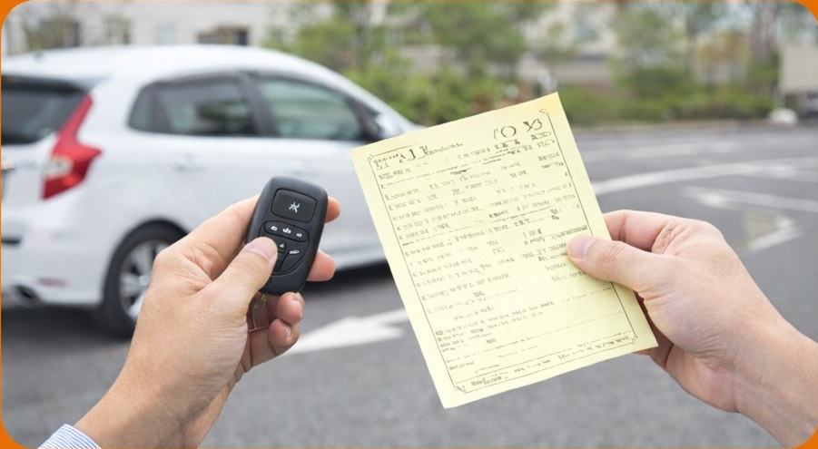廃車・名義変更もまとめて対応。
エアコン掃除
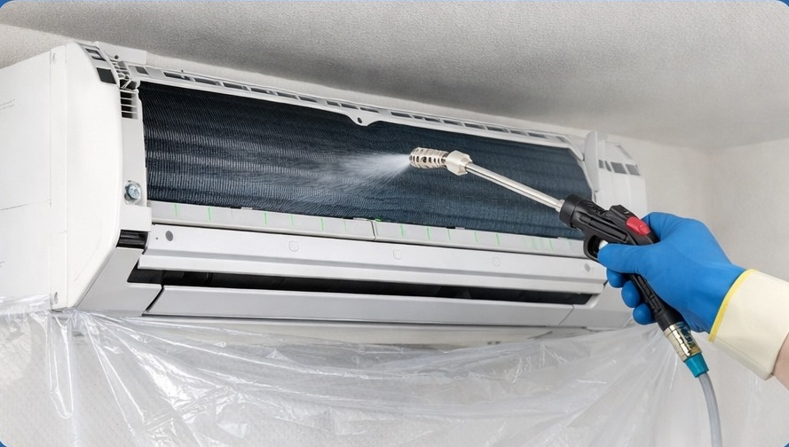家庭用エアコンの分解洗浄。
料金案内（目安）
1K
23,000円〜
1DK
31,000円〜
1LDK
40,000円〜
2DK
58,000円〜
2LDK
70,000円〜
3DK
76,000円〜
3LDK
110,000円〜
4LDK
125,000円〜
※表は概算料金です。状況により変動します。
※訪問見積もり後、追加料金は発生しません。
施工事例（Before/After）
お部屋の整理・清掃
キッチンの油汚れ・不用品撤去
車両清掃
ご利用の流れ
お問い合わせ
電話・メール・LINEからご相談ください。
無料お見積り
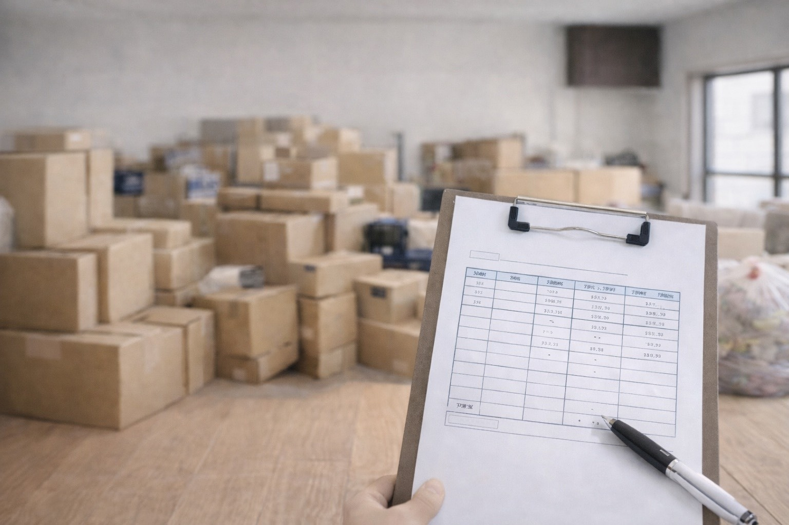現地確認後、明朗な見積りをご提示。
ご契約
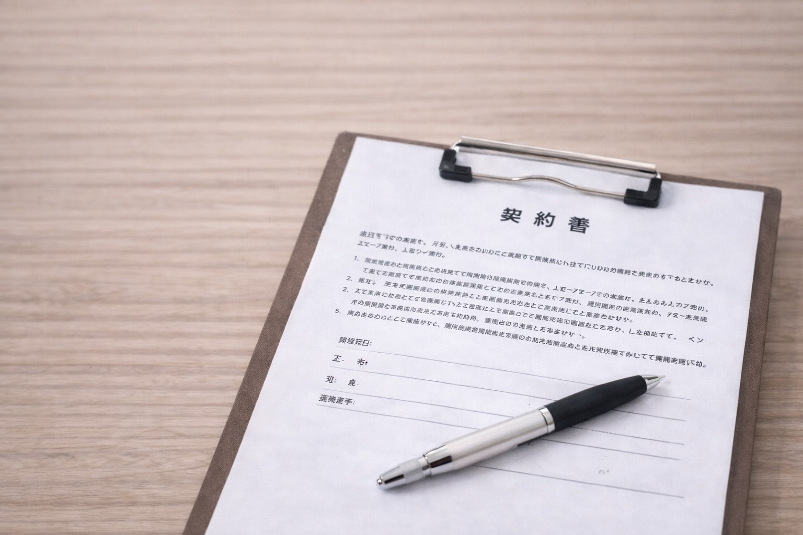内容にご納得いただいた上で作業日決定。
仕分け・搬出作業
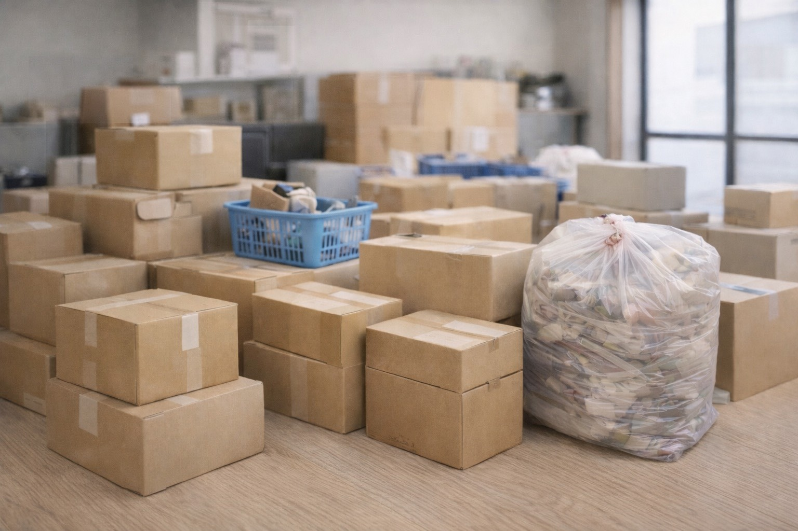遺品整理士が丁寧に仕分けし搬出。
清掃・手続き
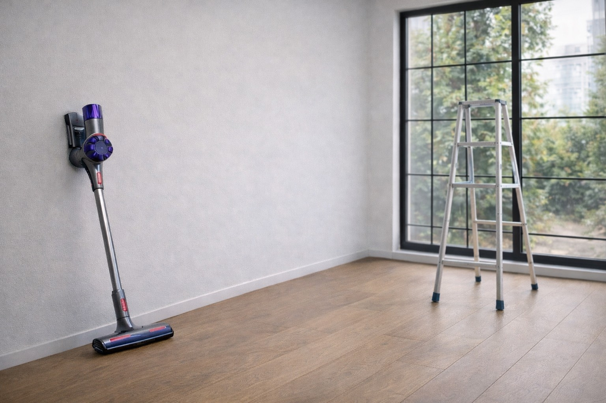簡易清掃や車両手続きも対応。
作業完了
最終確認後、お引き渡し。
メディア掲載情報
2023年1月17日｜テレビ朝日ドラマ『星降る夜に』
2023年1月17日よりテレビ朝日系列で放送されたドラマ『星降る夜に』では、遺品整理士という仕事が物語の重要なテーマとして描かれました。主人公の一人・柊一星（北村匠海）が遺品整理士として働く姿や、人の想いに寄り添うシーンが印象り、多くの視聴者に遺品整理士という職業の魅力が伝わる内容となっています。
2025年10月8日｜『ホンマでっか！？TV【令和の最新「終活」SP】』
2025年10月8日（水）放送の『ホンマでっか！？TV【令和の最新「終活」SP】』では、当協会の常務理事・長谷川が遺品整理の評論家として出演しました。スマホのパスワード管理や相続のポイントなど、終活にまつわる身近なテーマが紹介され、視聴者にとって分かりやすく役立つ内容となりました。
対応エリア
東海遺品整理では、岐阜県全域・愛知県全域を中心に幅広い地域で対応しています。 市町村レベルまで細かく対応しておりますので、お気軽にご相談ください。
岐阜県（全域対応）
- 岐阜市・大垣市・高山市・多治見市・関市・中津川市・美濃市・瑞浪市・羽島市・恵那市
- 美濃加茂市・土岐市・各務原市・可児市・山県市・瑞穂市・飛騨市・本巣市・郡上市・下呂市・海津市
- 岐南町・笠松町・養老町・垂井町・関ケ原町・神戸町・輪之内町・安八町・揖斐川町・大野町・池田町・北方町
- 坂祝町・富加町・川辺町・七宗町・八百津町・白川町・東白川村・御嵩町
愛知県（全域対応）
- 名古屋市（全区）・一宮市・瀬戸市・春日井市・犬山市・江南市・小牧市・稲沢市・尾張旭市・岩倉市
- 豊明市・日進市・清須市・北名古屋市・長久手市・東郷町・豊山町・大口町・扶桑町
- 津島市・愛西市・弥富市・あま市・大治町・蟹江町・飛島村
- 半田市・常滑市・東海市・大府市・知多市・阿久比町・東浦町・南知多町・美浜町・武豊町
- 岡崎市・豊田市・安城市・刈谷市・知立市・高浜市・豊橋市・豊川市・蒲郡市・新城市・田原市・西尾市・みよし市
その他地域
- 三重県、滋賀県
- 静岡県、長野県
- 京都府、奈良県
- 福井県、石川県、一部